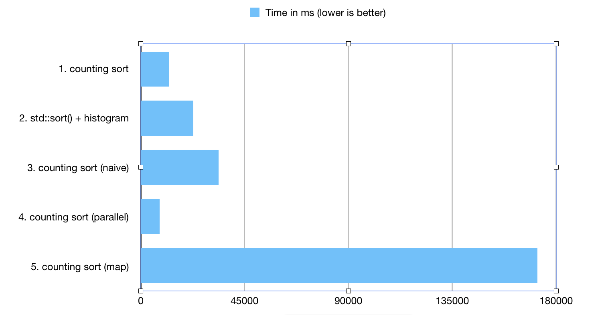

Histogram construction with counting sort using BitMagic bm::sparse_vector<> container
Anatoliy Kuznetsov. Apr, 2018. anatoliy_kuznetsov@yahoo.com
Introduction
This application note describes an application of counting sort for unsigned integers using BitMagic bm::sparse_container< >.
Sparse container implements run-time bit transposition and compression techniques to improve memory footprint.
Use of simple counting sort is naturally limited to cases, where input numbers are bound to a specific dynamic range of values.
In undefined large ranges counting sort may require lots of memory.
sparse_vector<> partially solves this problem and provides mechanism for efficient use of counting sort, construct histogram of values, compute mode value of
the input integer sequence.
Counting sort is not the only method, so here I evaluate different approaches to histogram construction.
Histogram construction has wide utility in statistics, database query plan optimizations, visualization of data, compression, probability and other areas.
Data structure
bm::sparse_vector<> is used for a target data structure for histogram. This container offers bit transposition compression and serialization to save the compressed histogram object.
Another possible alternative used for comparison purposes is std::map<unsigned, unsigned>, which implements a R-B tree.
Another alternative would be to use hash structure, something is not covered in this case study (future work).
typedef bm::sparse_vector<unsigned, bm::bvector< > > sparse_vector_u32;
typedef std::map<unsigned, unsigned> map_u32;
QuickSort (std::sort) based method
The most straight-forward way to build a histogram of unsorted array of integers is to sort it first using one of the available algorithms O(N log N), then build a sorted histogram of values in one linear pass over the array.
Code below assumes the input vector comes sorted.
void build_histogram(sparse_vector_u32& sv_out, const std::vector<unsigned>& vin)
{
if (vin.empty())
return;
unsigned start = vin[0];
unsigned count = 0; // histogram counter
for (auto v : vin)
{
if (v == start)
{
++count;
}
else
{
sv_out.set(start, count);
start = v; count = 1;
}
}
if (count)
{
sv_out.set(start, count);
}
}
R-B Tree counting sort
C++ STL library offers a convenient (and popular) R-B tree implementation, which can be a basis for counting (in-place) sort. Counting sort using stl::map<> is very compelling in its simplicity. R-B Tree insert operations are evaluated as O(log N) which makes it a good candidate (from the theoretical standpoint).
void sort_map(map_u32& hmap, const std::vector<unsigned>& vin)
{
for (auto v : vin)
{
hmap[v]++;
}
}
Counting Sort with bm::sparse_vector<> (naive)
void counting_sort_naive(sparse_vector_u32& sv_out, const std::vector<unsigned>& vin)
{
for (auto v : vin)
{
auto count = sv_out.get(v);
sv_out.set(v, count + 1);
}
}
This method is in nature similar to hash containers. This method is totally applicable for cases when input data happen to come as a stream (unbounded array) and we need to perform transformation on the fly.
Why is it labeled naive?
BitMagic sparse_vector supports get()/set() access to elements, and we use it here, combined with an external value increment. Is it the most efficient? No. In this case we have to insure full penalty of extraction of full value from separate bit-vectors representing our bit-plains. Such access pattern will cause much higher penalty for extra computations and CPU cache misses.
It is naive, because it is possible to do better!
Counting Sort with bm::sparse_vector<> ( using inc() )
Better way of doing the same is to use inc() method provided in BitMagic 3.11.0 (for sparse_vector<> and bvector<>). This method implements binary arithmetic increment with carry-over and designed to be more efficient with memory access patterns.
void counting_sort(sparse_vector_u32& sv_out, const std::vector& vin)
{
for(auto v : vin)
sv_out.inc(v);
} Benchmark
1. counting sort ; 12321.1 ms
2. std::sort() + histogram; 22686.7 ms
3. counting sort (naive) ; 33629.4 ms
4. counting sort (parallel) ; 8220.56 ms
5. counting sort (map) ; 171814 ms
 The benchmark generated 250000000 unsigned integers in the range of [0..1250000]
Benchmark Notes
- QuickSort based on plain in-memory arrays outperformed naive version of counting sort. This happened, because of the relatively high costs of access to random elements in sparse_vector (where BitMagic needs to keep working on performance tuning). It is difficult to outperform an array, but we should keep trying. :)
- BitMagic counting sort based on inc() faired well and very competitive, due to performance optimizations done for the single value increment. I have to note that results may be dependent on the actual data distribution patterns.
- STL map - happens to be poor choice for histogram construction. There are many reasons for that: memory fragmentation, inherently L1 cache unfriendly design of lists and trees. In performance sensitive cases - map<> - avoid.
Parallel counting sort
This is VERY simple attempt to implement parallel counting sort using sparse_vector<> just to touch the water. Clearly, counting sort is a clear subject for divide and conquer parallelization with minimal final merge costs.
Implementation notes
- Problem divide criteria is intentionally simple: odd and even numbers. Main thread works on one batch (odd) parallel - process even. Thus, chosen degree of parallelism is 2.
- Use of STL provided std::asyn() and futures. This is NOT the best paradigm for parallel programming in my opinion, but ok-ish for an experiment.
-
Use of
sparse_vector<>::join()to merge the results. Merge stage relies on that histograms are completely separate and uses bit-vector OR (the core of join) to combine the partial results. This stage responds well to SIMD vectorization (vector-parallel operation). It should be possible to implement thread parallel join (maybe later).
unsigned counting_sort_subbatch(sparse_vector_u32* sv_out, const std::vector* vin)
{
for (size_t i = 0; i < vin->size(); i++)
{
auto v = (*vin)[i];
if ((v & 1) == 0)
sv_out->inc(v);
}
return 0;
}
void counting_sort_parallel(sparse_vector_u32& sv_out, const std::vector<unsigned>& vin)
{
sparse_vector_u32 sv_out2(bm::use_null);
// process evens in parallel
std::future<unsigned> f1 = std::async(std::launch::async, counting_sort_subbatch, &sv_out2, &vin);
// process all odd elements
for (size_t i = 0; i < vin.size(); i++)
{
auto v = vin[i];
if (v & 1)
sv_out.inc(v);
}
f1.wait();
sv_out.join(sv_out2);
}
2x parallel implementation is very simple, despite its simplicity according to benchmark results it outperforms single threaded variant by 40%. 30 lines of code well spent.